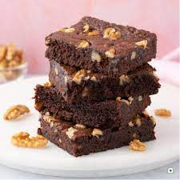

Brownie

A chocolate brownie, or simply a brownie, is a chocolate baked confection. Brownies come in a variety of forms and may be either fudgy or cakey, depending on their density. Brownies often, but not always, have a glossy "skin" on their upper crust.
Ingredients
- 1/2 cup butter
- 1 cup white sugar
- 2 eggs
- 1 tablespoon vanilla extract
- 1/3 cup unsweetened cocoa powder
- 1/2 cup all-purpose flour
- 1/4 teaspoon salt
- 1/4 teaspoon baking powder
Ingredients for frosting
- 3 tablespoons butter, softened
- 3 tablespoons unsweetened cocoa powder
- 1 tablespoon vanilla extract
- 1 cup confectioners' sugar
Method
- Preheat the oven to 350 degrees F (175 degrees C). Grease and flour an 8-inch square pan.
- Melt 1/2 cup butter in a large saucepan. Remove from heat, and stir in sugar, eggs, and 1 teaspoon vanilla. Beat in 1/3 cup cocoa, flour, salt, and baking powder. Spread batter into prepared pan.
- Bake in the preheated oven until top is dry and edges have started to pull away from the sides of the pan, about 25 to 30 minutes. Let cool briefly before frosting.
- To make the frosting: Combine softened butter, confectioners' sugar, 3 tablespoons cocoa, honey, and 1 teaspoon vanilla extract in a bowl. Stir until smooth. Frost brownies while they are still warm.
- SERVE WITH LOVE 😀
SERVE WITH LOVE 😀